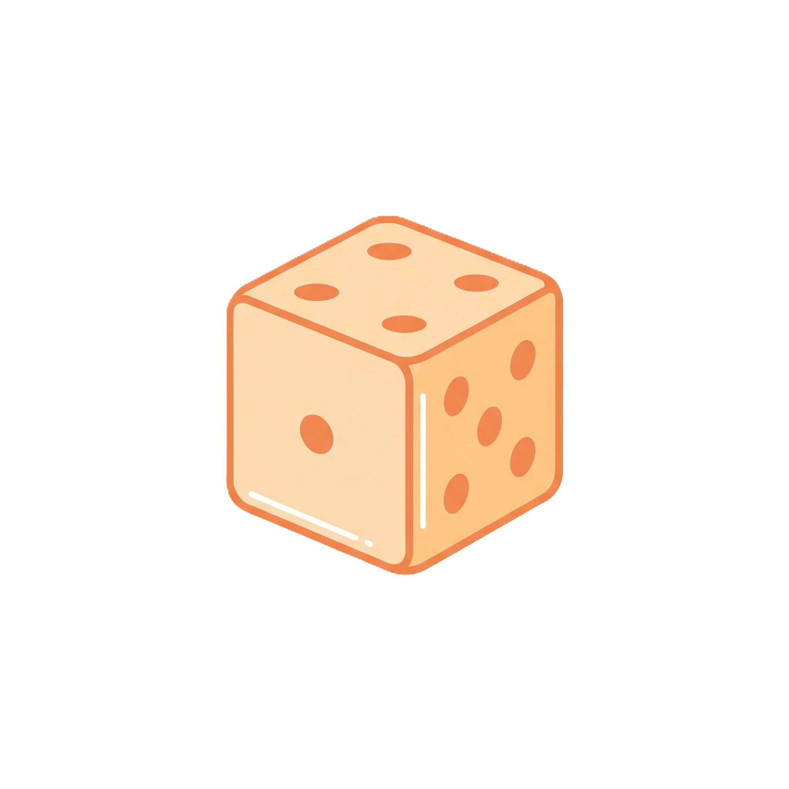

De acordo com uma pesquisa divulgada pela Nexus, em 2023, apenas 26% dos alunos ingressantes nos cursos de STEM (Ciência, Tecnologia, Engenharia e Matemática) se identificavam com o gênero feminino. Apesar disso, desde 2014, a taxa de conclusão desses cursos tem sido maior entre as mulheres do que entre os homens.
Historicamente, enquanto sociedade, acreditamos que cabem às mulheres as práticas de cuidado e reprodução, e isso pode levar à crença de que, naturalmente, as mulheres pertencem apenas às Ciências Humanas. Lourdes Bandeira, uma pesquisadora sobre gênero da universidade de Brasília, compartilha que: “Há uma predisposição de achar que meninas são voltadas para ciências humanas e meninos para as exatas. Nós temos que eliminar essa ideia”.
Precisamos eliminá-la, já que a ciência se faz melhor em um ambiente plural e diverso. A ideia de que mulheres simplesmente não são boas em exatas cai por terra quando pensamos que, apesar de ingressarem em menor número nesses cursos, em proporção, após ingressarem, as chances de concluírem são maiores que as dos homens.
Certo, já conversamos sobre estatísticas até aqui, mas não era exatamente esse o meu objetivo ao trazer esses dados. 😅
Na verdade, meu objetivo é sustentar um relato pessoal: eu sempre acreditei que os cursos de exatas não eram para mim. Matemática era o verdadeiro terror do meu ensino fundamental e médio. Depois que as funções de segundo grau começaram a aparecer na minha vida, tudo foi ladeira abaixo. O x da questão é que, assim como eu, imagino que muitas meninas e mulheres compartilham ou, pelo menos, já compartilharam do mesmo pensamento: acreditamos que as ciências exatas não são para nós e, com poucas exceções, sequer pensamos em seguir para uma área que exija qualquer cálculo mais complexo do que dividir a conta do bar.
Recentemente, inclusive, uma colega de trabalho compartilhou comigo que estava pensando em iniciar sua graduação em Engenharia da Computação e que, apesar de já estar com tudo resolvido, existe apenas uma barreira a impedindo de começar: o fato de nunca ter sido boa em Matemática.
Acredito que existam outros relatos parecidos, mas, apesar disso, existem muitas mulheres se formando em STEM. E, há alguns anos, decidi que também gostaria de ser uma delas.
Foi quando ingressei no curso de Ciência de Dados, apesar de todos os meus traumas com a Matemática. E decidi, de uma vez por todas, fazer amizade com ela. Agora, embarquei na jornada de estudar Estatística e Probabilidade: um dos pilares da Ciência de Dados.
Existem diversas maneiras de aprender, e cada pessoa possui a (ou as) forma(s) com a qual melhor se identifica. Para mim, o que funciona é revisar e tentar explicar o que estou aprendendo. Foi por isso que surgiu a ideia de escrever esses artigos.
Toda essa contextualização serviu, primeiro, para contar um pouco da minha história e, depois, te convidar a seguir comigo nessa jornada. Aqui, pretendo compartilhar um pouco dos meus estudos sobre Estatística e Probabilidade, de maneira leve e descontraída, começando pelos conceitos mais básicos — que é o que estou estudando agora.
E a gente começa pela pergunta mais fundamental de todas: afinal, o que é Estatística?
Resposta rápida: É a ciência que trata da coleta, organização, análise e interpretação de um conjunto de dados, com o objetivo de auxiliar na tomada de decisões. Dados, por sua vez, são valores (numéricos ou categóricos) coletados através de observações, contagens ou até mesmo por meio de uma resposta dada para alguma pergunta. Sem um contexto, no geral, um dado não significa muita coisa.
Por exemplo, eu posso dizer que meu dado é 42.
Mas o que isso significa? É a quantidade de estradas que uma pessoa precisa percorrer? É a resposta para a vida, o universo e tudo mais? Sem um contexto, não é possível responder.
Agora, se eu disser que o dado é “42 anos”, saberei que, provavelmente, se trata da idade de alguém. Eu forneci um contexto que torna possível essa interpretação.
Dados são usados o tempo todo na Estatística e, por isso, é importante compreendê-los. Existem dois tipos principais de conjuntos de dados usados na disciplina: população e amostra, cada um com seus próprios termos e métodos específicos.
Para não me prolongar muito, acredito que esse seja um bom assunto para o próximo artigo. Caso o tema seja do seu interesse, espero te ver lá! 😊
Antes de concluir, no entanto, aproveito o espaço para indicar duas playlists excelentes no YouTube, que estão servindo de base para os meus estudos:
A primeira é a do Douglas Maioli, doutor em Matemática Aplicada pela UNICAMP. Você pode acessar a playlist clicando aqui.
A segunda é do Téo Calvo, bacharel em Estatística pela UNESP. A playlist está disponível aqui.
Por fim, também estou utilizando o livro Estatística aplicada, de LARSON, Roland Edwin; FARBER, Betsy. 6. ed. São Paulo, SP: Pearson, 2015.
Bons estudos e até mais!
